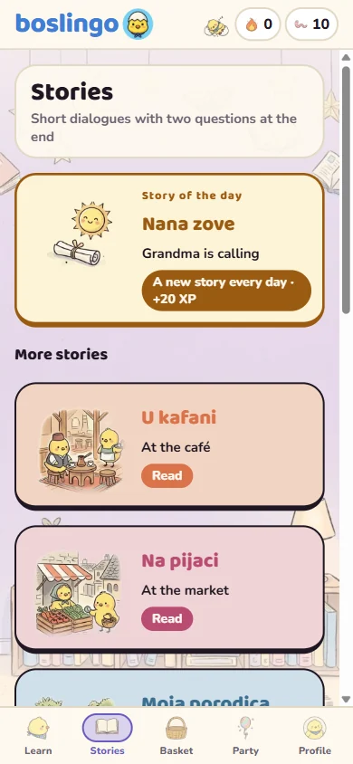
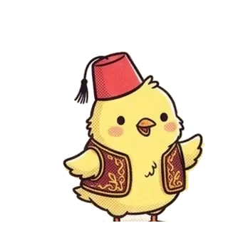
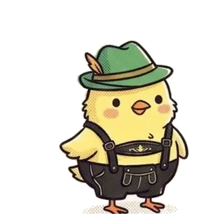
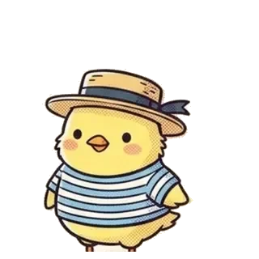
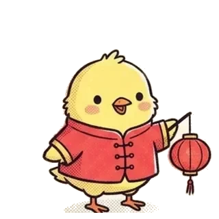

boslingo
boslingoBoşnakçayı bir civcivle öğren.Learn Bosnian with a little chick.
Beş dakikalık oyun gibi dersler, kısa hikayeler ve Saraybosna’dan Mostar’a uzanan bir yol. Boslingo, Boşnakçayı ilk kelimeden sohbete kadar adım adım öğretir.Five-minute lessons that feel like a game, short stories, and a trail from Sarajevo to Mostar. Boslingo takes you from your first word to your first conversation, one step at a time.
- Tamamen ücretsizCompletely free
- Hesap açmadan başlaStart without signing up
- 6 dilde arayüzInterface in 6 languages
Nasıl öğrenirsinHow you learn
Her gün küçük bir adımA small step every day
Dersler, üniversitelerde okutulan bir başlangıç kursunun sırasını izler: selamlaşmadan sayılara, aileden havaya.The lessons follow the order of a university beginners’ course: from greetings to numbers, from family to the weather.
Kısa dersler
Her ders birkaç dakika: resimlerle yeni kelimeler, eşleştirme, yazma ve dinleme. Her kelimeyi Boşnakça sesli dinlersin.
Short lessons
A few minutes each: new words with pictures, matching, typing and listening. You hear every word spoken in Bosnian.
Hikayeler
Kafede, pazarda, ailenle: kısa diyaloglar ve sonunda iki soru. Her gün yeni bir hikaye seni bekler.
Stories
At the café, at the market, with family: short dialogues with two questions at the end. A new story waits for you every day.

Seri ve arkadaşlar
Günlük görevler, ödül sandığı ve haftalık lig. Arkadaşlarını ekle, birbirinize can gönderin, seriyi birlikte koruyun.
Streaks and friends
Daily quests, a reward chest and a weekly league. Add friends, send each other lives and keep your streaks going together.
Kendi dilinden öğrenLearn from your own language
Altı dilde, kendi kıyafetiyleSix languages, each in its own dress
Arayüz ve alıştırmalar seçtiğin dilde. Dili istediğin zaman Profil’den değiştirebilirsin.The interface and the exercises are in the language you choose. You can change it any time in Profile.

TürkçeBoşnakça öğren
DeutschLerne Bosnisch
ItalianoImpara il bosniaco
中文学习波斯尼亚语Saraybosna’dan Višegrad’aFrom Sarajevo to Višegrad
Öğrenme yolun Bosna’yı dolaşır: Başçarşı, Mostar Köprüsü, Kravice şelaleleri, Jajce ve Drina. Her ünite yeni bir yere götürür.
Your learning path travels across Bosnia: Baščaršija, the Mostar bridge, the Kravice falls, Jajce and the Drina. Every unit takes you somewhere new.
Güvenle öğrenLearn with peace of mind
Bir öğrenme uygulaması. Başka bir şey değil.A learning app. Nothing else.
Ücret, abonelik ya da uygulama içi satın alma yok. Kâr amacı olmayan bağımsız bir proje.
No price, no subscription, no in-app purchases. An independent, non-commercial project.
Hiç reklam yok, dersin ortasında hiçbir şey araya girmez.
Not a single ad; nothing interrupts a lesson.
Analiz ya da takip aracı yok, veri satılmaz. Hesabını ve verini tek dokunuşla silebilirsin.
No analytics or trackers, and no data is sold. You can delete your account and data in one tap.